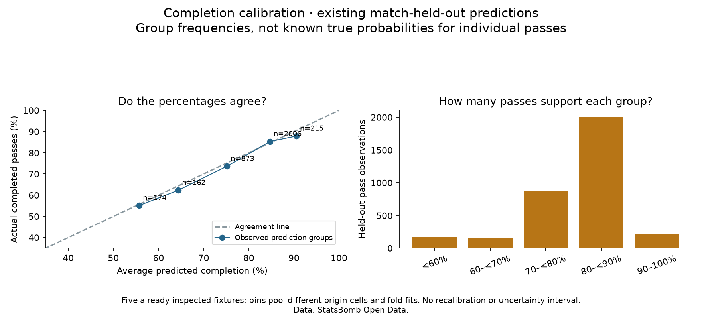

Football analyst training · Phase 3 · Lesson 49
When we say 90%, does roughly 90% happen?
We already compared our model with a baseline. Now we inspect the meaning of its percentages.
Completed assignment
Take the 215 checked passes predicted at 90% or higher. Their average prediction is 90.6%. Count the real outcomes: 189 completed / 215 attempts = 87.9%.

How we calculate the two numbers
Average prediction = add predicted probabilities / number of passes Observed rate = completed passes / number of passes
The first number uses predictions; the second uses real outcomes. The model is not changed in this lesson.
What to understand
This comparison is called calibration. One pass predicted at 90% can fail; we need groups of observations to inspect whether the percentages line up with what happened. No individual pass has a known true completion probability.
Groups here mix zones and fold models, and all matches were already inspected. Close group rates do not guarantee reliability in every situation.
Run 49_completion_probability_calibration.py in Spyder. The worked assignment is complete with assistance. Ask for more detail if the two calculations are unclear.